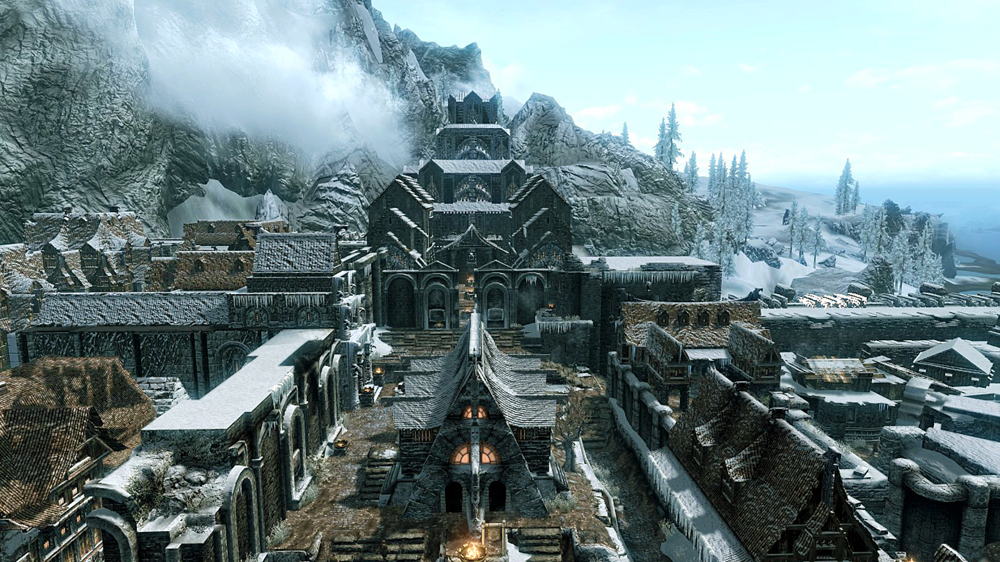

What Is A Faction?
A faction in Skyrim is a group of people who are allied together that work together to fulfill a common goal. A good example of this in the real world is to picture it like a construction site, everyone is working together to finish building a house and they each get payed to do so.
There Are A Total Of 9 Factions The Player Can Join:
- Companions
- College Of Winterhold
- Volkihar Clan
- Dawnguard
- Dark Brotherhood
- Thieves Guild
- Blades
- Stormcloaks
- Imperials
Companions
JorrvaskrThe Companions can trace their origins from the Five Hundred Companions which the legendary army Ysgramor raised to wage war against the snow elves and avenge the Night of Tears. After defeating the snow elves in the Nordic-Falmer War, the remnants of the Five Hundred Companions went their separate ways to inhabit the unexplored lands of Tamriel. This period of exploration and colonization is known as The Return.
Several hundred years after the death of Ysgramor, the Companions had converted into soldiers for hire. Their services could be purchased for the fighting of wars, but the commitment to individual honor meant that often Shield-Brothers would be forced to face each other on the field of battle. Since the conflict of interests between its members was jeopardizing their bonds of honor, Harbinger Mryfwiil, in his wisdom, decreed that they would no longer be party to any war or political conflict of any kind. Because of his steady hand, the Companions today are known as impartial arbiters of honor, in addition to their glories on the field of battle.
By the end of the First Era, the Companions have begun to do away with rigid rules of Atmoran racial purity and recruited people of different races and walks of life to fill their ranks. After the dark periods in the late Second Era, when a string of false and dishonorable Harbingers laid claim to Jorrvaskr, it was Kyrnil Long-Nose who gathered the true hearts of the Companions in the wilds and stormed Jorrvaskr itself, killing the usurpers and returning honor through blood, in the old ways. He began the tradition of trusted advisors called the Circle (named after Ysgramor's council of captains) who would serve as examples to the younger, newer Companions.
College Of Winterhold
College Of WinterholdWinterhold was once a great, powerful and wealthy hold, and its relationship with the College of Winterhold was good.
In 4E 122, an unprecedented, cataclysmic event struck Winterhold and most of the areas along the coastline. A massive storm came in from the Sea of Ghosts, which brought huge waves which crashed into Winterhold. Most of the city fell into the sea, leaving the city in ruins both physically in terms of the destruction of the city itself, and the emotional and psychological damage to Winterhold's people. This event would eventually be referred to as "The Great Collapse." The disaster left Winterhold in ruins, and some had said that things would never be the same again, including Winterhold's relationship with the College. The people of Winterhold would eventually begin to blame the College for causing the Great Collapse. Winterhold has yet to recover from the Great Collapse.
Volkihar Clan
Castle VolkiharCastle Volkihar is a location in The Elder Scrolls V: Dawnguard. It is a large castle that rests on a secluded island in the Sea of Ghosts. The castle serves as the primary base for the Volkihar Clan. If the Dragonborn joins the Volkihar Vampires, the castle can be used as a home.
Dawnguard
Fort DawnguardFort Dawnguard is a location in The Elder Scrolls V: Dawnguard. It serves as the headquarters of the Dawnguard, an order of vampire hunters. The fort can only be accessed via Dayspring Canyon north of Stendarr's Beacon. It is located in the Rift, hidden deep within the Velothi Mountains near the Morrowind border.
The fort dates back to at least the Second Era, when it was built by the Jarl of Riften. The Jarl's son, through his overly confident and adventurous pursuits, contracted vampirism. The Jarl refused to kill his own son, so instead commissioned the construction of the fort and contracted a large mercenary force, named the "Dawnguard," in order to keep his son quarantined.
Dark Brotherhood
Dark Brotherhood SanctuaryThe Dark Brotherhood Sanctuary, also known as the Falkreath Sanctuary, is a small underground settlement located in Skyrim. The last remnants of the Dark Brotherhood are based here. The sanctuary can be found near the road heading west from Falkreath and just southeast of the Roadside Ruins.
Outside is a pitch-black pool of water and a mysterious door displaying a carving of a skull, with a bloody handprint signifying The Dark Brotherhood emblazoned on it.
Thieves Guild
The Ragged FlagonBased in Skyrim and headquartered in The Ratway beneath the city of Riften, members of the Thieves Guild are renowned for causing trouble in the city and are held largely responsible for the corruption of the city's markets. Members of the guild specialize in stealing objects of varying value or loaning septims to potential entrepreneurs or to help someone pay off their debts, in hopes of a payback. Most citizens view them unfavorably; Mjoll the Lioness has made it her duty to maintain order in Riften and pledges to dismantle the guild. Maven Black-Briar, the affluent and unscrupulous owner of the popular Black-Briar Meadery, consorts with the guild in exchange for their financial aid and protection. The guild has an uncanny luck due to certain members striking up a deal with the Daedric Prince, Nocturnal, to serve as guardians to her temple.
The guild has a strong hold in politics and law enforcement due to their ability to bribe, intimidate and extort the officials and guards of any hold by exploiting their greed or by threatening to reveal embarrassing and potentially damning secrets to the public.
Blades
Sky Haven TempleThe story of the Blades begins with the Akaviri invasion during the First Era. After the Akaviri forces had fought through Skyrim and reached the Pale Pass, they were met by Reman Cyrodiil and his forces. It is said that after hearing the Emperor's "voice" or Dragon Shout, the Akaviri forces knelt and swore fealty to him, whom they called Dragonborn. They later formed the order that is now known as the Blades.
The true reasons for their invasion remains a mystery, though it is mentioned that they may have been looking for a new Dragonborn to serve or hunting down the dragons that escaped their continent.
Stormcloaks
 Palace Of The KingsThe Stormcloaks believe Skyrim should secede from what they feel is a corrupt crumbling Empire. This stance came about due to the aftermath of the Great War and the imposition of the White-Gold Concordat by the Aldmeri Dominion. The Stormcloaks consider the Empire as just a puppet of the Thalmor because the Empire surrendered during the Great War and accepted the Dominion's terms of surrender. These terms ban the worship of Talos, which most Nords do not support. Many are outraged at this Talos ban and point out the Markarth Incident, as an example of the Empire publicly supporting the Dominion's oppressive influence over Skyrim. Furthermore, their opinion of the Empire is exacerbated with the arrival of the Thalmor Justiciars, who have been granted the authority by the Empire to enforce the White-Gold Concordat within Skyrim.
The Stormcloaks believe they should not have to divert Skyrim's resources to rebuild a diminished Empire too weak to provide the functions of a just government and is under the Thalmor's thumb. Some think that the Empire is maintaining power in Skyrim by propping up loyalist Jarls. Many Stormcloaks have also begun to resent the imposition of what they believe are, Imperial-sanctioned High Kings, who can only act as figurehead puppets and not kings of merit. With so many grievances, the Stormcloaks have concluded that political independence is what's best for Skyrim, since it frees them from the Empire's detrimental policies and allows the natives of Skyrim to determine the fate of their homeland. Though there is much uncertainty that goes hand in hand with their revolutionary aspirations, the Stormcloaks believe that they will remedy Skyrim's wretched state and preserve their Nordic way of life.
Imperial Legion
Castle DourThe Imperial Legion believes that as a province of the Empire, Skyrim must abide by its laws and customs. Though most do not approve of the White-Gold Concordat, they nevertheless allow Thalmor Justiciars to enforce the ban in order to preserve the peace between the Empire and the Aldmeri Dominion. If any legionaries are believers of Talos, such as Legate Rikke who is implied to be a believer, they keep their religion to themselves and pray to Talos discreetly and out of earshot.
Though the Empire has appeased the Aldmeri Dominion's demands, the Imperial Legions in Skyrim claim that the Empire has little love for the Dominion. Most Imperial supporters believe that Skyrim and the Empire must remain united in order to fend off the Aldmeri Dominion if a second war with them erupts. Some accuse Ulfric Stormcloak of orchestrating the Stormcloaks' rebellion as a selfish ploy to set himself up as Skyrim's next High King. The Imperial Legion believes that they can only restore peace to Skyrim and the Empire by killing Ulfric and quelling his rebellion.